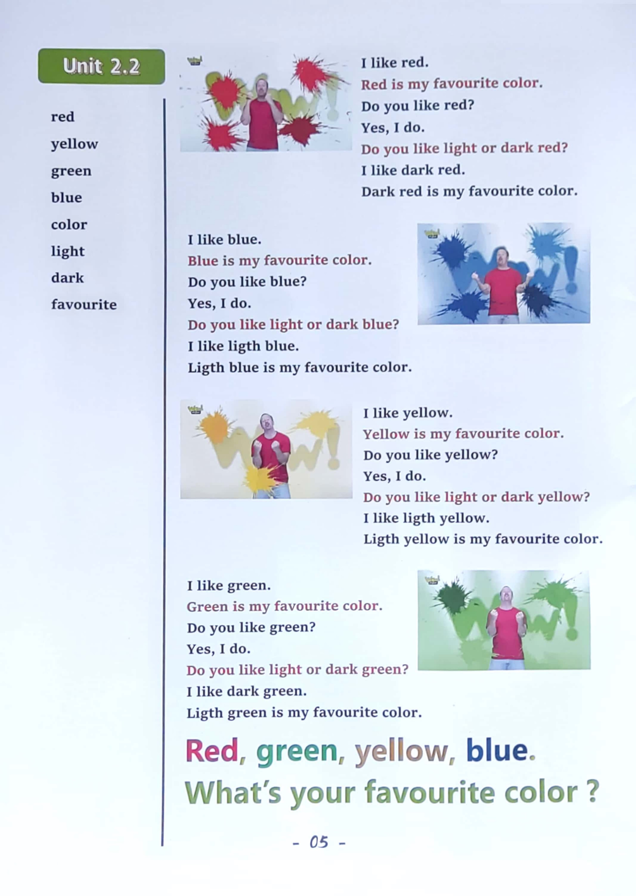

Day 5
Unit 3 · story
教材重点
教材重点依据网盘文件“第四级绿色每日打卡全.pdf”，PDF 第 7 页对应 Day 5；以原图为准，避免对图片文字做不可靠的自动识别。
网盘教材重点原图 · PDF 第 7 页对应 Day 5

Unit 3 · story · 6–7岁
look · play · wow · say
Hello, hello, my name's Steve.
台词本为机器转写，可能存在识别误差；不等同于视频逐字原声。
详细内容
Part 1 核心词汇
必须掌握 · 4 个Part 2 跟读句型与句型拓展
左侧保留台词本原句，右侧为替换练习；拓展内容不是视频逐字台词。
Hello, hello, my name's Steve.
It's time to play. It's time to play in English.
Pencil, pencil sharpener.
Ruler and rubber, no, what a mess. Oh, I'm going to be late for school.
Oh, oh, hey, hello, boys and girls, I'm looking for some things for school.
Part 3 台词本全文
来源：第4级台词本 · 005.Wow!Green - Unit 3 story1.pdf。以下保留网盘 PDF 的机器转写文本，仅清理了文件路径页眉和空行。
Hello, hello, my name's Steve.
It's time to play. It's time to play in English.
Pen.
Pencil, pencil sharpener.
Ruler and rubber, no, what a mess. Oh, I'm going to be late for school.
Oh, oh, hey, hello, boys and girls, I'm looking for some things for school.
I need my pen, my pencil, my rubber, my ruler, my pencil sharpener.
HO, where is everything? HO, hey, look, what's that What is it.
What is it? Yeah, it's a pen, hey, say it with me in a silly voice, what is it.
It's a pen. What is it It's a pen, come on, what is it.
It's a pen here, well done. This is my favorite.
Dark, blue pen, great. Yes. Maggie, let's play. Let's play.
Maggie, I can't play. I'm trying to find the things I need for school.
I can help find everything. There's my pencil sharpener, I've got my pencil sharpener.
Oh, oh, who know what is it? Oh, what is it? Oh, what is it? Oh, look, it's a pencil sharpener.
Oh no, oh, oh, help.
Go.
Hey, look.
It's a pencil sharpener, this is pencil sharpener, wow, hey,
Say it with me in a low voice. What is it.
Boots are, pencil sharpener, hey, and again, in a low voice, what is it.
It's a pencil, sharpener, a pencil sharpener, great.
But it's crazy, it's too big, it's not too big.
You're small, don't be scared. Let's play. What.
Oh, it's Maggie. Maggie.
Wow.
Look, oh, everything I need for school is here. It's all really.
Oh, look.
I'm jumping on a big rubber.
What is it say it with me Come on, what is it It's a rubber, it's a rubber, it's a rubber hand again, what is
i
t.
/
-
/4/005.Wow!Green - Unit 3 story1.txt[2022/3/29
星期二
6:49:27]
It's a rubber, it's a rubber, it's a rubber, wow, what a big rubber.
Hey, it gives me an idea. Yeah.
Oh,
HA, HA, HA,
Hey,
What's Steve doing? Oh, oh, oh, look, look, what is it? Oh,
It's a ruler, say it with me up here, what is it.
It's a ruler, yeah, down here, what is it It's a ruler? Well, then what is it.
It's a ruler, yeah, great. Okay. Put this up here.
Okay, you, super, okay. Oh, hey,
Oh, what has Steve got? Wow. Look at this pencil or.
Oh, wow, what color is the pencil? Yeah?
It's black and yellow, it's a black and yellow pencil, okay, put the pencil up.
Here, oh.
Who finished.
OK, now it's time to play, come on at my playground. What can we do.
Well, hey, we can.
Jump on the rubber. Hey, jump, jump jump. Oh, oh, be careful.
Oh, now we can walk.
Along the pencil, go go go, oh, hey, what is it.
Say it with me down here.
It's a pencil, it's a pencil, it's a pencil, well done, hey, watch this.
Oh, now say with me up here.
What is it.
It's a pencil, it's a pencil, it's a pencil, well done, oh, look.
Now we can slide down the ruler, hey, what color is the ruler light, green, here it's light green.
It's a light, green.
Wow, that was great.
But it's time to go to school Now, so.
Maggie, make me big again, KAY, I break it, I broke you.